카드 앨범 · 덱
모은 카드는 앨범의 성장으로, 장착한 카드는 덱의 효과로 이어지는 수집·강화 시스템 — 다크디셈버에서 원기획하고 언디셈버로 이관해 라이브에서 개선
카드를 계속 모으고 강화할 이유
수집·강화한 카드가 앨범의 누적 성장과 덱의 조합 선택, 두 경로로 쓰이도록 설계했습니다. 모은 카드를 조합에 따라 다양한 전투 환경에서 활용하는 것이 목표였습니다.
수집을 성장으로
수집·강화한 카드로 앨범 효과를 쌓고, 다음에 달성할 목표를 제공했습니다.
모으기와 조합하기
앨범은 계속 모을 목표를, 덱은 필요한 효과에 맞춰 카드를 고르는 선택을 제공합니다.
새로운 그룹 추가
구성 카드와 효과 조건을 따로 관리해, 새 앨범과 덱 세트를 쉽게 추가할 수 있게 했습니다.
같은 카드 그룹, 다른 역할
카드 앨범과 카드 덱은 동일한 카드 그룹을 기반으로 하지만, 앨범은 누적 수집 목표를, 덱은 장착 기반 세팅 목표를 제공하도록 역할을 분리했습니다.
| 구분 | 카드 앨범 | 카드 덱 |
|---|---|---|
| 핵심 목적 | 수집 / 강화 달성 보상 | 전투 세팅 선택지 |
| 조건 기준 | 보유 수, 강화 합 — 앨범에 속한 카드의 보유 수와 강화 합을 함께 충족 | 장착 수, 강화 합 — 덱에 장착 중인 카드 수와 강화 합을 함께 충족 (강화 합 조건이 0이면 장착 수만 확인) |
| 유저 경험 | 더 많은 카드를 수집하고 강화하며 달성감을 경험 | 다양한 카드 조합을 시도하며 전투 스타일을 구성 |
| 적용 방식 | 조건 달성 시 영구 적용 — 카드를 장착하지 않아도 앨범 효과 적용 | 장착 시 적용, 해제 시 해제 — 저장한 덱 구성에 따라 세트 효과 적용 |
그룹 구성과 효과 조건의 분리
각 그룹에 들어갈 카드를 정하고, 같은 그룹의 앨범 보상과 덱 효과를 각각 설정할 수 있도록 구성했습니다.
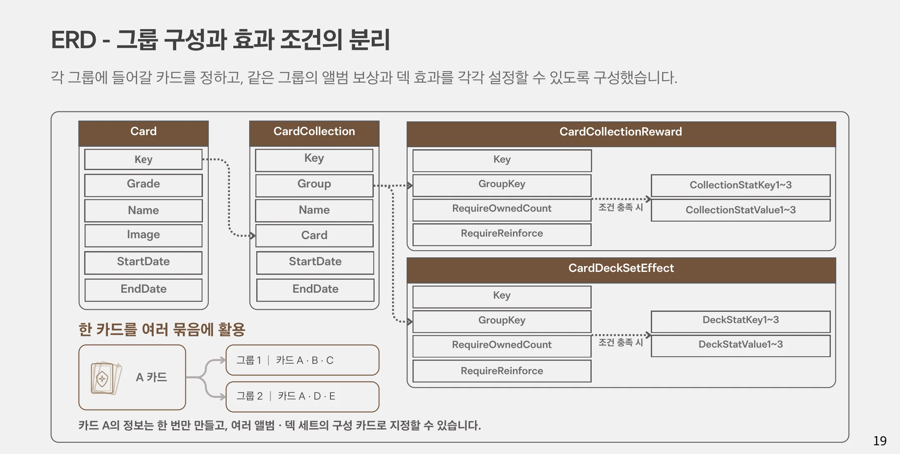
한 카드를 여러 묶음에 활용
카드 A의 정보는 한 번만 만들고, 여러 앨범·덱 세트의 구성 카드로 지정할 수 있습니다.
- 그룹 1 — 카드 A · B · C
- 그룹 2 — 카드 A · D · E
- CardCollectionReward —
RequireOwnedCount·RequireReinforce·CollectionStatKey1~3 - CardDeckSetEffect —
RequireOwnedCount·RequireReinforce·DeckStatKey1~3 - StartDate / EndDate — 시즌·이벤트 그룹의 노출 기간 제어
탐색 · 목표 · 조합, 세 개의 화면
카드 리스트 — 탐색과 실행을 한 화면에
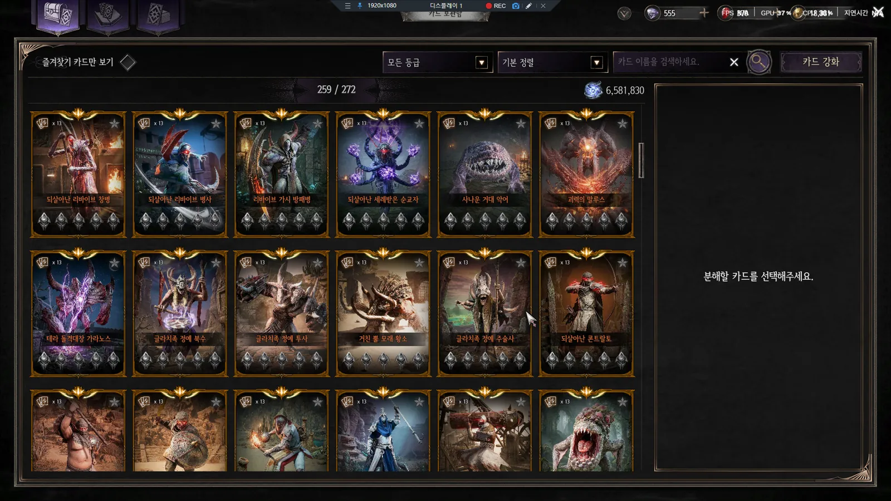
- ① 검색 · 목록 — 검색·필터·정렬과 카드별 보유 상태 확인
- ② 강화 대상 — 선택한 카드와 현재 목표 강화 단계 표시
- ③ 재료 · 실행 — 필요 재료, 보유량과 강화 실행 버튼 배치
카드를 바꿔 선택하며 강화 조건을 비교하고, 요구량과 보유량을 함께 보여 실행 전에 부족한 재료를 판단하도록 했습니다.
카드 앨범 — 다음에 할 행동을 판단
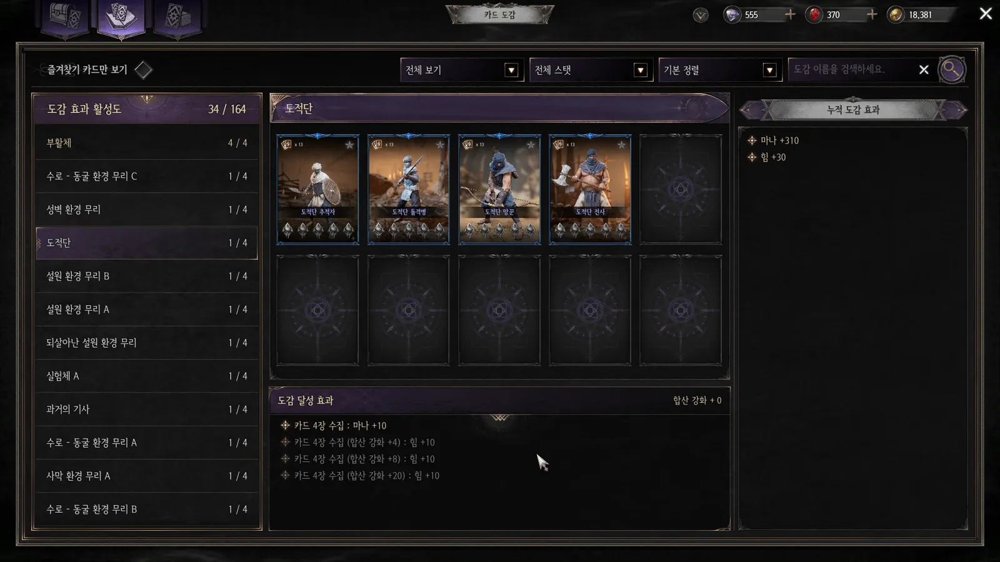
- ① 앨범 목록 — 그룹별 수집 진행도와 효과 달성 상태
- ② 구성 카드 — 앨범에 필요한 카드의 보유·강화 상태
- ③ 조건 · 보상 — 달성에 필요한 조건과 획득 효과를 함께 표시
미보유 카드는 획득하고, 강화 합이 부족하면 강화한다 — 부족한 조건과 그걸 채워 얻는 효과를 같은 화면에서 확인합니다.
카드 덱 — 조합과 효과를 함께 비교

- ① 카드 슬롯 — 6개 슬롯의 장착 상태 확인 및 카드 교체
- ② 세트 효과 — 장착한 카드로 충족한 효과와 조건 확인
- ③ 덱 저장 — 편집한 구성을 확인한 뒤 저장
이관 후 개선 — 전체 효과 보기와 적용 효과 우선 정렬을 추가했습니다.
확인한 카드를 바로 강화 대상으로
언디셈버로 이관한 뒤, 앨범·덱에서 본 카드를 강화하려면 카드 리스트에서 다시 찾아야 하는 불편을 발견했습니다. 롱프레스 진입을 추가해 '확인'과 '성장' 사이를 줄였습니다.
조작 구분
짧게 누르는 기존 동작은 유지하고, 길게 누르는 경우에만 정보 팝업을 출력합니다.
예외 처리
미등록 카드는 강화 진입을 비활성화하고, 덱 편집 중 이동 시에는 저장 여부를 확인합니다.
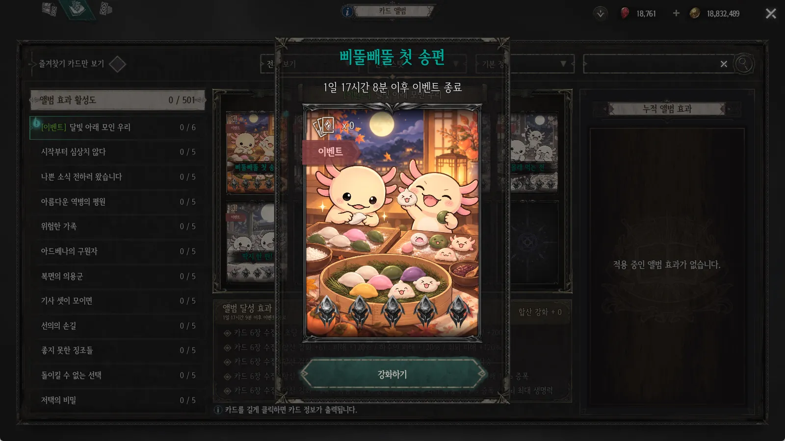
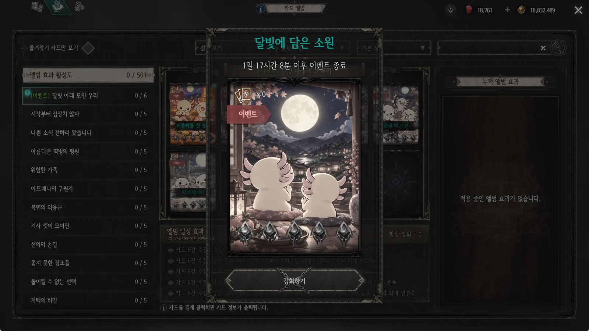
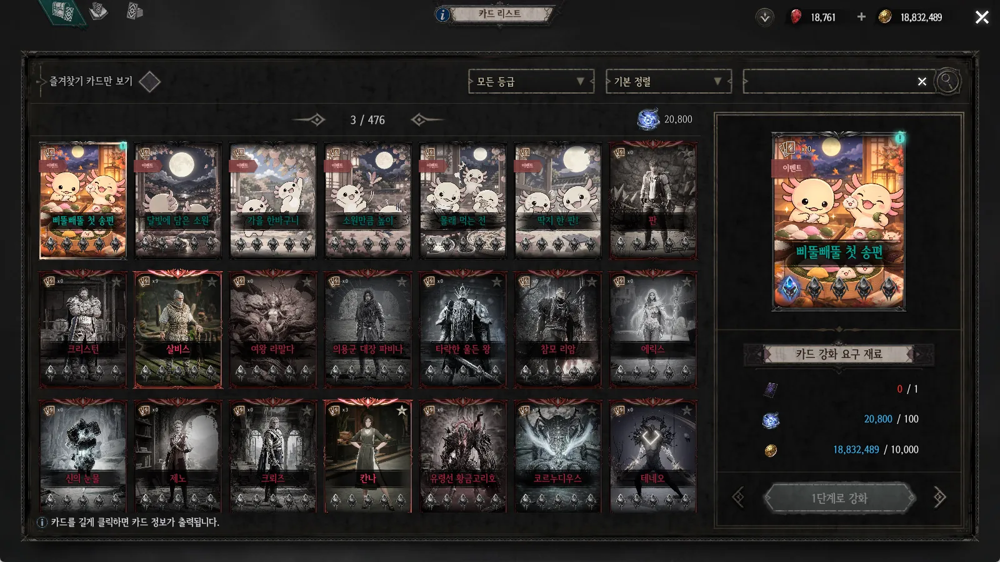
개발 화면
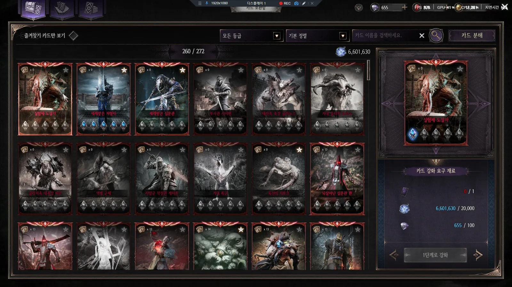
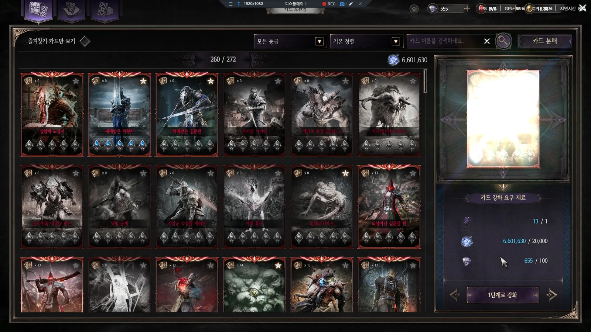
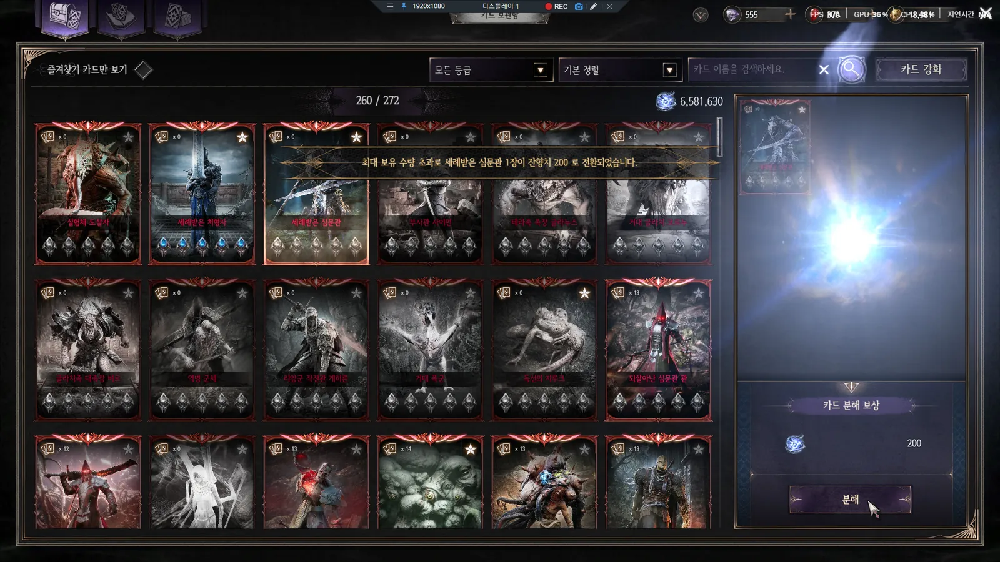
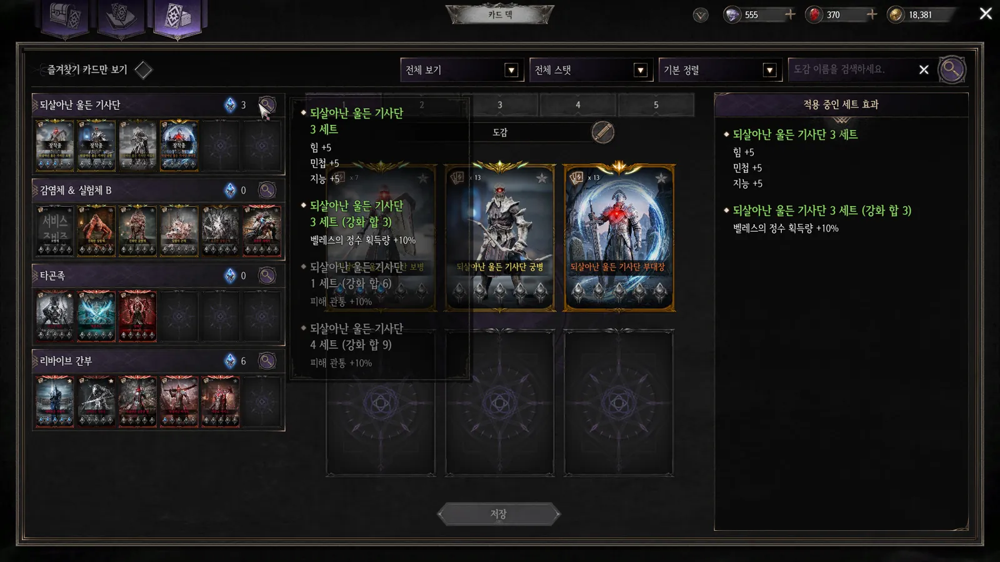
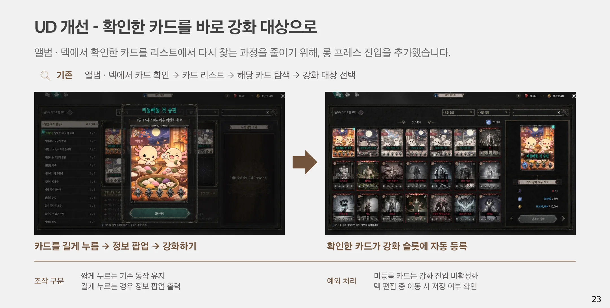